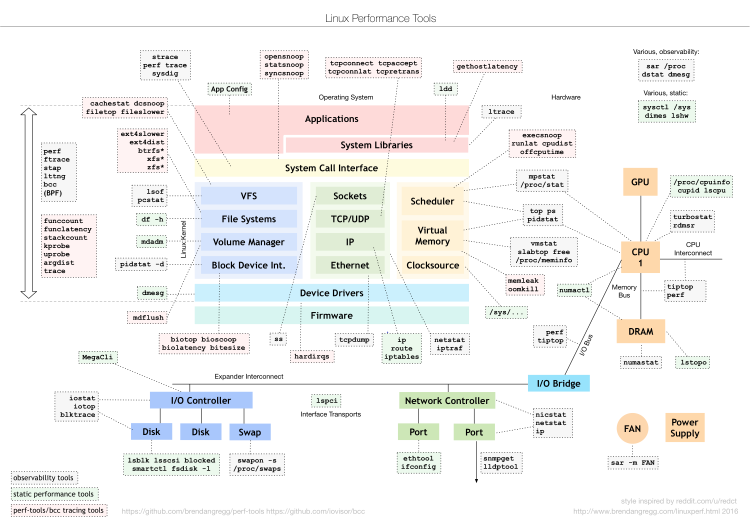

What did you do this past week?
This past week was crunch time. I had two projects and two papers due, so I was writing and programming for the majority of the week. This weekend I've been working on Project 2 for 371P, and of course I watched the UT game. The project has been sort of slow go, but I'll talk about that next.
As for UT football, I'm excited to see what the OU game will be like. The second half against Kansas State was rather poorly executed, so I'm hoping we don't set a tone of playing poorly in the second half
for the rest of the season. We definiely can't afford to do that against OU, considering they have the best offense and one of the best quarterbacks in the country. I have a feeling the game will be a shootout,
in otherwords a completely offensive battle.
What's in your way?
So I've been so jammed packed with assignments that I haven't been giving much thought to the Voting project. I've been working on it this weekend, but I've been slow to really hammer anything out.
The reason is kind of silly. I want to keep a REPL structure in the heart of the program, but I'm also having a hard time implementing it the correct way that I want it. I've probably rewritten/redesigned
the state flow of the REPL three or four times because as I start to write it out I think about a future optimization and the code complexity/editing that will have to be added if I don't do something a
certain way the first time. Ultimately what I feel like I'm trying to do is save myself time in the long run, and it doesn't really seem to be working. I kind of need to get out of my own way.
What will you do next week?
Next week I have a couple of more things due for my online classes, and of course I have the Voting project to turn in. After that the rest of the week is pretty wide open. The hope is to actually work on my side project, which has been placed on the backburner because of all the homework I've been slammed with.
In regards to Project 2, I need to finish my initial HackerRank code, and then start actually setting up the GitLab environment for the Continuos Integration testing, which is something I've been procrastinating.
What's your experience of the readings, so far?
I really enjoy the readings. They aren't long, and they have all been really insightful so far. I don't think I;ve read one yet that I haven't taken something away from it. My favorite so far has probably been "Little Bug, Big Bang" just because I've been working in the Aeronautics industry for a while and that's probably where I'll end up once I graduate.
What's your pick of the week?
My pick of the week is something I ran into on Social Media. For all of the Linux users, programmers, developers, and hackers out there this will probably be a pretty useful graphic:
